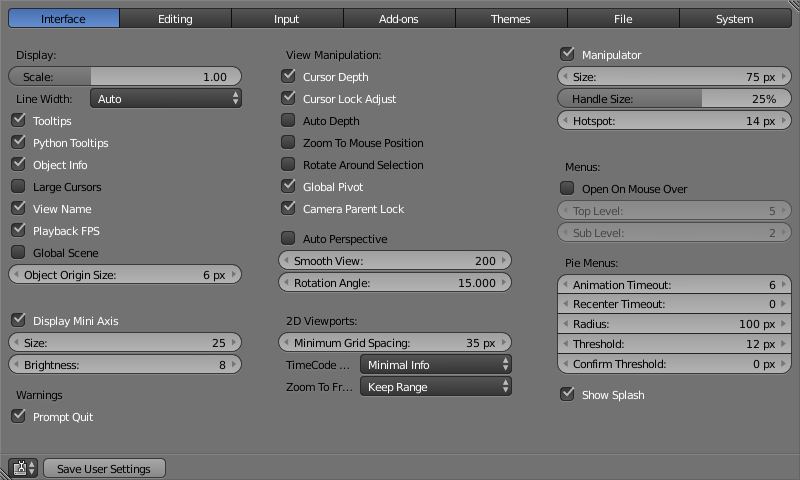

«Інтерфейс» -- Interface¶
Конфігурація у вкладці «Інтерфейс» дозволяє вам змінювати те, як елементи КІ будуть показуватися те, як вони будуть реагувати.

Показ -- Display¶
- Scale
- Adjusts the size of fonts and buttons relative to the automatically detected DPI. During typical usage, you may prefer to use zoom which is available in many parts of Blender interface.
- Line Width
Scale of lines and points in the interface e.g. button outlines, edges and vertex points in the 3D View.
Thin, Auto, Thick
- Підказки -- Tooltips
- При увімкненні спливна підказка показується при наведенні над контролером вказівника миші. Ця підказка пояснює функцію, контролер якого під вказівником, дає інфо про асоційоване з нею клавіатурне скорочення (якщо таке є) та функцію Python, яка посилається на неї.
- Підказки Python -- Python Tooltips
- Показує інформацію про властивість Python для функції нижче під основною підказкою.
- Інфо Об'єкта -- Object Info
- Показує ім'я активного Об'єкта та номер кадру у нижньому лівому кутку 3D Огляду -- 3D View.
- Великі Курсори -- Large Cursors
- При увімкненні показує курсори миші великими, наприклад, у Режимі Правки.
- Ім'я Огляду -- View Name
- Display the name and type of the current view in the top left corner of the 3D View. For example: User Perspective or Top Orthographic.
- Частота кадрів Відтворення -- Playback FPS
- Показує частоту оновлення екрану у кадрах за секунду при відтворенні анімації. Вона показується у лівому верхньому кутку оглядвікна та забарвлюється у червоний, якщо задана для анімації частота не може бути досягнута при перегляді відтворення.
- Сцена Глобально -- Global Scene
- Змушує показ поточної сцени у всіх екранах (проект може містити більше, ніж одну сцену).
- Розмір Початку Об'єкта -- Object Origin Size
- Diameter of 3D Object centers in the viewport (value in pixels from 4 to 10).
- Показувати Міні Осі -- Display Mini Axis
- Показує міні осі у нижньому лівому кутку оглядвікна.
- Розмір -- Size
- Розмір міні осей.
- Яскравість -- Brightness
- Коригує яскравість міні осей.
Попередження -- Warnings¶
- Нагадування при Виході -- Prompt Quit
- When exiting Blender, a pop-up will ask you whether or not you really want to quit (currently only available on MS-Windows).
Маніпуляція Оглядом -- View Manipulation¶
- Глибина під Курсором -- Cursor Depth
- Використовує глибину під вказівником миші при розміщенні курсора.
- Авто-Глибина -- Auto Depth
- Використовує глибину під вказівником миші для покращеної функціональності панорамування, обертання та зумування огляду. Корисно у комбінації з увімкненою опцією «Зумування До Позиції Миші» -- Zoom To Mouse Position.
- Зумування До Позиції Миші -- Zoom to Mouse Position
- При увімкненні позиція вказівника миші стає фокусною точкою зумування замість центру 2D вікна. Корисно для уникання панорамування, якщо ви часто зумуєте (присуваєте та відсуваєте) огляд.
- Оберт Навколо Виділення -- Rotate Around Selection
Виділений об'єкт (центр габаритної коробки) стає центром обертання оглядвікна. При взагалі відсутності поточно будь-якого виділення використовується центр останнього зробленого виділення.
Gợi ý
Це може здатися ідеальною поведінкою. Однак, це може стати і проблематичним з великими об'єктами такими, як сіть місцевості, де центр є не обов'язково вашою точкою інтересу.
- Глобальна Опорна точка -- Global Pivot
- Фіксує одну і ту ж опорточку обертання/масштабування у всіх 3D Оглядах.
- Зблокувати Камеру з Предком -- Camera Parent Lock
- Коли камера зблокована з оглядом та знаходиться у навігаційному режимі «Політ, трансформуватися буде предок-огляд, а не сама камера.
- Авто Перспектива -- Auto Perspective
- Автоматично додатково перемикає на Ортогональні огляди Зверху/Збоку/Спереду після перемикання з перспективного огляду. При вимкненні, огляди Зверху/Збоку/Спереду залишатимуться при перемиканні Ортогональними або Перспективними (залежно від того, який вид був перед перемиканням).
- Згладжений Огляд -- Smooth View
- Тривалість часу анімування огляду при зміні виду огляду за допомогою цифроблоку (Зверху/Збоку/Спереду/Камера...). Нульове значення вилучає цю анімацію.
- Кут Обертання -- Rotation Angle
- Розмір кроку обертання 3D Огляду у градусах при використанні скорочень Numpad4, Numpad6, Numpad8, або Numpad2.
2D Оглядвікна -- 2D Viewports¶
- Мінімум Проміжку Сітки -- Minimum Grid Spacing
- Мінімальна кількість пікселів між лініями сітки у 2D (тобто, ортогональному зверху) оглядвікні.
- Стиль Час-Коду -- Time Code Style
- Формат час-кодів, що показується, коли не відображається часування у термінах кадрів. Цей формат використовує '+' як роздільний для під-секундних номерів кадрів, з обрізанням зліва та справа часкоду при необхідності.
- Тип Зумування до Кадру -- Zoom To Frame Type
Як зумування до кадру фокусує навколо поточного кадру.
Утримання Діапазону -- Keep Range: Todo. Секунди -- Seconds: Todo. Ключкадри -- Keyframes: Todo.
- Маніпулятор -- Manipulator
- Turns manipulator on and off.
- Розмір -- Size
- Діаметр маніпулятора 3D трансформацій.
- Розмір Держака -- Handle Size
- Розмір держаків маніпулятора 3D трансформацій, як відсоток від радіусу маніпулятора (size/ 2).
- Активна зона -- Hotspot
- Розмір активної зони (у пікселях) для клацання на держаках маніпулятора.
Заставка -- Splash¶
- Показати Заставку -- Show Splash
- Показує Екран Заставки -- Splash Screen при запуску Blender'а.